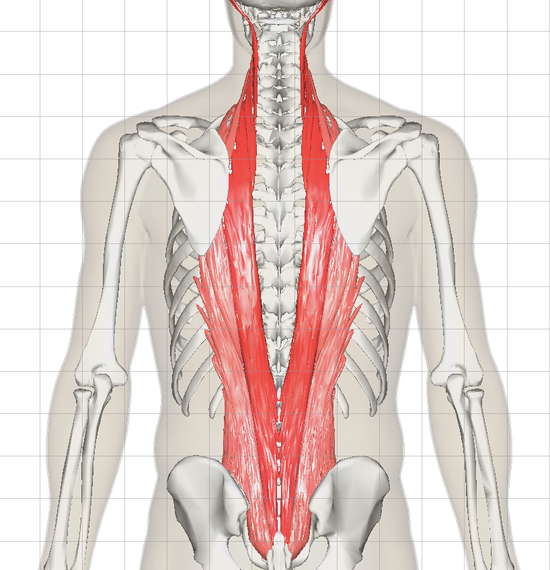

척추기립근은 최장근과 가시근 그리고 엉덩갈비근의 근육 그룹을 일컫는 용어로 복직근과 함께 척추를 굽히고 펴는 움직임에 관여하는 근육이다.
따라서 척추기립근 운동을 하여 강화를 시키게 되면 허리 통증에 예방이 되고 미용목적으로도 등을 보기 좋게 만들어 주는 근육으로 등운동을 할때 필수적으로 함께 하면 좋은 근육이라고 볼 수 있다.
척추기립근의 위치를 살펴보자면

척추기립근은 다음과 같은 위치에 존재하고 있다.
▶척추 옆에서 척추를 곧게 잡아줌
▶척추의 외측굴곡과 신전, 회전 등의 수행을 도움
이러한 기능을 하여 강화를 하게 되면 허리건강에도, 미용목적으로도 크게 도움이 되는데 척추기립근을 위한 운동은 어떤것이 잇을까? 그에 대한 답변을 위해 유튜브 양선수의 온라인PT의 영상에서 정보를 가져왔다.
척추기립근의 기능, 생김새, 그리고 위치에 대해서 간단하게 살펴보고 그에 대한 운동법에 대해 알아보았으니 앞으로 스스로 열심히 운동하기를 바란다.
하지만 주의할 점은 어떤 운동이나 마찬가지 이지만 허리이기 때문에 운동 자세에 대해서 주의를 하면서 운동을 하기를 바라겠다.